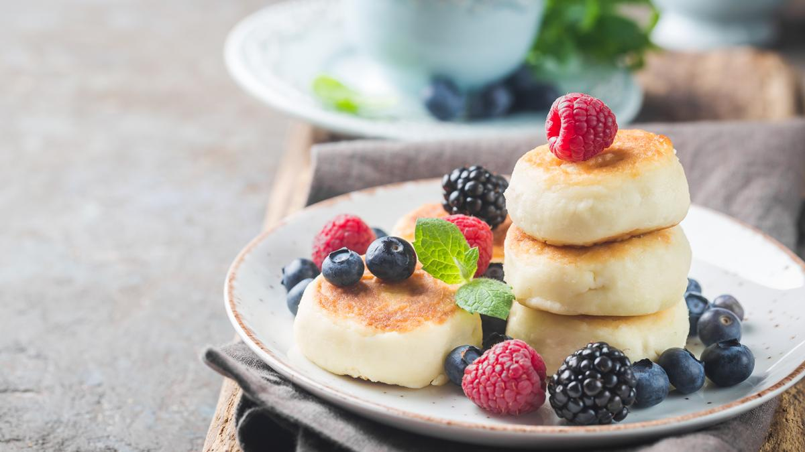

Top BreakFast In EUROPE
1. HomeMade Croissant
- Croissant dough begins with butter, flour, sugar, salt, yeast, and milk.
- Unlike most yeasted doughs that require warm liquid to activate the yeast, you're going to use cold milk.
- The yeast will work its magic later on in the recipe.
- In the beginning steps of croissants, the dough should always be cold.
2. Rosti with Smoked Salmon

- Asparagus with Hollandaise Sauce and Smoked Salmon.
- Smoked Salmon and Brie Cucumber Bites.
- Toast with Soft Scrambled Eggs and Smoked Salmon.
- Smoked Salmon Eggs Benedict.
- Avocado Toast with Cucumber Ribbons and Smoked Salmon.
- Loaded Baked Potatoes with Tomatoes, Smoked Salmon, and Sour Cream.
3. Racuszki

- Racuchy (pronounced Rahtz-oo-hih) is a traditional Polish dish
- From the same family of foods as the crêpe and similar to American or Scottish pancakes.
- Racuchy are made from flour, milk, eggs, sugar and a pinch of salt.
- Racuchy are made with yeast or, in other versions, baking powder or baking soda.